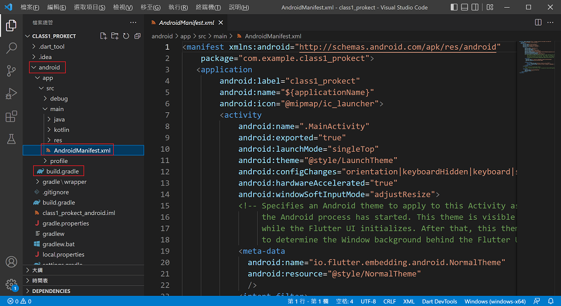
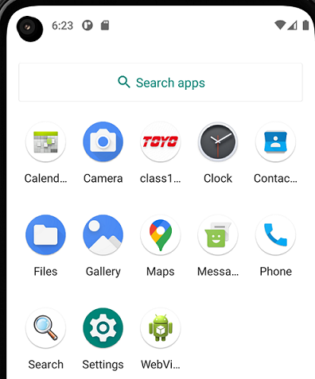
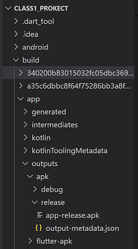
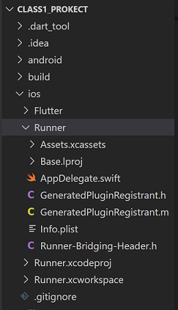
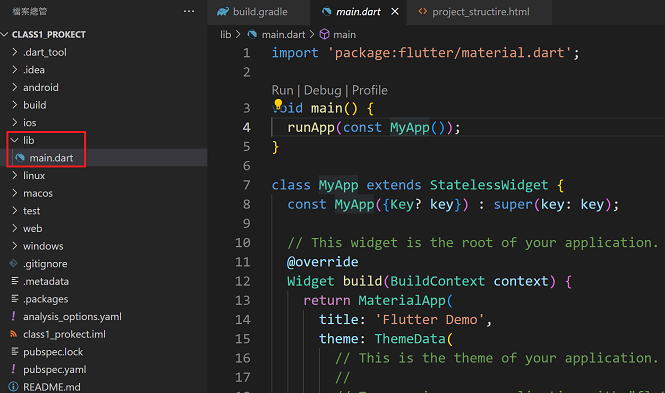
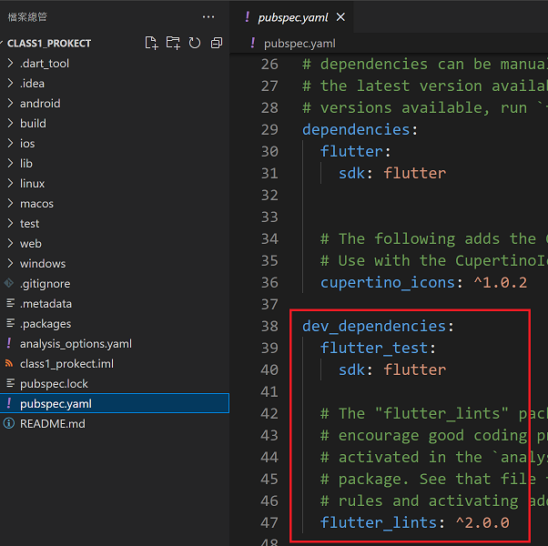

請依照下列操作開啟或新增專案名稱為testapp的Flutter專案並將專案顯示於模擬器。
使用Android Studio
-------------------------------------
1. 開啟Android Studio
2. 選擇New Flutter project
3. 確定Flutter SDK位置
4. 設定Flutter project name
5. 設定organization(一般為反向Domain name)
6. 點選 finish 建立project
7. 開啟模擬器
8. 執行專案
使用Visual Studio Code
-------------------------------------
1. 開啟Vsiaul Studio Code
2. 選擇 檢視-命令選擇區
3. 輸入 Flutter: New Project
4. 選擇 Application
5. 選擇project擺放檔案夾
6. 設定project名稱
7. 選擇輸出設定
8. 執行專案
專案中android資料夾用於進行建立Android原生應用時使用，AndroidManifest.xml為Android APP的設定檔，經常用於設定Android APP權限，build.gradle用於APP建立設定，res檔案夾包含Android平台會使用的圖示(icon)、圖片與樣式。
練習：請下載圖片並使用Launch icon generator製作並下載Android launch icon壓縮檔，解壓縮Android launch icon壓縮檔後，覆寫res檔案夾並重新執行project，(請注意：res檔案夾內hdip(72x72)、mdip(48x48)、xhdip(96x96)、xxhdip(144x144)、xxxhdip(192x192)分別放置不同大小launch icon。

用於存放Android APK檔，選擇Android studio命令Build-Flutter-Build APK或在命令提示字元視窗project目錄下輸入flutter build apk時，專案Android apk檔會存放於專案build-app-outputs-apk檔案夾中。如有警告訊息如Runtime JAR files in the classpath should have the same version，請至android-app-build.gradle中，將最後org.jetbrains.kotlin:kotlin-stdlib-jdk7改為org.jetbrains.kotlin:kotlin-stdlib-jdk8即可。
用於存放iOS相關檔案，Runner-Info.plist用於設定iOS權限，Runner-Assets.xcassets-AppIcon.appiconset用於設定iOS launch icon，Runner-Runner.xcworkspace用於在XCode開啟專案。
練習：請下載圖片並使用App Icon Generator製作並下載iOS launch icon壓縮檔，解壓縮下載檔案後，更名並覆寫Runner-Assets.xcassets-AppIcon.appiconset檔案夾並重新執行project，(請注意：檔案axa@b是指圖片大小abxab。
用於放置專案葉面程式，專案的頁面程式需置於lib資料夾中，Flutter使用Dart程式來進行頁面設計，頁面檔案必須是Dart檔案，預設project包含一個頁面程式main.dart，也是專案進入程式。
pubspec.yaml為專案設定檔，Flutter專案需要利用外部資源包含第三方套件、圖片與影片、外部字型等，這些都必須在pubspec.yaml檔中進行設定，請注意：pubspec.yaml為階層式的資料結構檔案，階層必須使用空白對齊，階層可以是一個以上空白，不能使用TAB鍵來進行對齊，表示方式類似JSON的Key-Value表示式。
